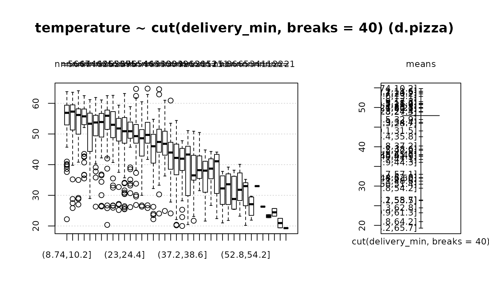

CatTable.RdCatTable helps printing a table, if is has to be broken into multiple rows. Rowlabels will be repeated after every new break.
CatTable(tab, wcol, nrepchars, width = getOption("width"))the rows of a table to be printed, pasted together in one string with constant columnwidth.
integer, the width of the columns. All columns must have the same width.
integer, the number of characters to be repeated with every break. This is typically the maximum width of the rowlabels.
integer, the width of the whole table. Default is the width of the current command window
(getOption("width")).
options(scipen=8)
# used in bivariate description functions
Desc(temperature ~ cut(delivery_min, breaks=40), data=d.pizza)
#> Warning: NaNs produced
#> Warning: NaNs produced
#> Warning: NaNs produced
#> ------------------------------------------------------------------------------
#> temperature ~ cut(delivery_min, breaks = 40) (d.pizza)
#>
#> Summary:
#> n pairs: 1'209, valid: 1'170 (96.8%), missings: 39 (3.2%), groups: 39
#>
#>
#> (8.74,10.2] (10.2,11.6] (11.6,13.1] (13.1,14.5] (14.5,15.9]
#> mean 54.804 54.129 52.824 53.818 50.899
#> median 56.900 57.300 56.200 55.750 53.350
#> sd 7.998 8.713 9.010 6.781 7.858
#> IQR 6.325 7.850 8.250 4.800 11.675
#> n 56 66 47 44 46
#> np 4.786% 5.641% 4.017% 3.761% 3.932%
#> NAs 0 0 0 0 0
#> 0s 0 0 0 0 0
#>
#> (15.9,17.3] (17.3,18.7] (18.7,20.2] (20.2,21.6] (21.6,23]
#> mean 51.493 51.058 53.452 50.693 49.807
#> median 53.750 53.900 55.950 53.000 51.800
#> sd 7.610 9.093 8.241 8.927 7.665
#> IQR 6.500 7.700 6.200 8.500 7.400
#> n 42 45 62 53 69
#> np 3.590% 3.846% 5.299% 4.530% 5.897%
#> NAs 0 0 0 0 0
#> 0s 0 0 0 0 0
#>
#> (23,24.4] (24.4,25.8] (25.8,27.3] (27.3,28.7] (28.7,30.1]
#> mean 48.987 50.027 48.825 45.970 49.851
#> median 50.900 50.900 49.300 48.600 49.700
#> sd 9.487 6.715 7.786 8.235 6.359
#> IQR 8.350 5.300 5.975 8.375 6.800
#> n 75 65 54 44 63
#> np 6.410% 5.556% 4.615% 3.761% 5.385%
#> NAs 0 0 0 0 0
#> 0s 0 0 0 0 0
#>
#> (30.1,31.5] (31.5,32.9] (32.9,34.4] (34.4,35.8] (35.8,37.2]
#> mean 44.037 46.931 46.223 42.550 40.203
#> median 46.000 47.400 46.800 43.950 42.200
#> sd 8.537 8.414 6.895 8.145 8.881
#> IQR 9.400 7.150 7.325 8.800 10.000
#> n 43 40 30 34 39
#> np 3.675% 3.419% 2.564% 2.906% 3.333%
#> NAs 0 7 6 4 2
#> 0s 0 0 0 0 0
#>
#> (37.2,38.6] (38.6,40] (40,41.5] (41.5,42.9] (42.9,44.3]
#> mean 39.388 37.885 37.535 39.107 36.042
#> median 41.950 43.300 36.500 38.200 38.050
#> sd 8.007 10.865 6.996 5.540 6.974
#> IQR 6.975 16.100 7.650 7.350 8.950
#> n 26 13 20 15 12
#> np 2.222% 1.111% 1.709% 1.282% 1.026%
#> NAs 3 1 3 6 2
#> 0s 0 0 0 0 0
#>
#> (44.3,45.7] (45.7,47.1] (47.1,48.6] (48.6,50] (50,51.4]
#> mean 37.987 36.791 31.262 32.033 30.483
#> median 38.700 41.100 32.250 33.600 28.800
#> sd 5.136 8.303 5.891 6.499 5.481
#> IQR 6.500 12.750 8.850 7.650 8.475
#> n 15 11 8 6 6
#> np 1.282% 0.940% 0.684% 0.513% 0.513%
#> NAs 1 0 0 0 0
#> 0s 0 0 0 0 0
#>
#> (51.4,52.8] (52.8,54.2] (54.2,55.7] (55.7,57.1] (57.1,58.5]
#> mean 32.140 29.467 26.450 33.000 26.300
#> median 31.800 33.000 27.100 33.000 26.300
#> sd 6.797 8.100 3.694 <NA> <NA>
#> IQR 9.000 7.500 5.100 0.000 0.000
#> n 5 3 4 1 1
#> np 0.427% 0.256% 0.342% 0.085% 0.085%
#> NAs 1 3 0 0 0
#> 0s 0 0 0 0 0
#>
#> (59.9,61.3] (61.3,62.8] (62.8,64.2] (64.2,65.7]
#> mean 23.200 24.450 20.950 19.300
#> median 23.200 24.450 20.950 19.300
#> sd 0.707 1.768 2.192 <NA>
#> IQR 0.500 1.250 1.550 0.000
#> n 2 2 2 1
#> np 0.171% 0.171% 0.171% 0.085%
#> NAs 0 0 0 0
#> 0s 0 0 0 0
#>
#> Kruskal-Wallis rank sum test:
#> Kruskal-Wallis chi-squared = 438.79, df = 38, p-value < 2.2e-16
#>
#>
#>

txt <- c(
paste(sample(letters, 500, replace=TRUE), collapse="")
, paste(sample(letters, 500, replace=TRUE), collapse="")
, paste(sample(letters, 500, replace=TRUE), collapse="")
)
txt <- paste(c("aaa","bbb","ccc"), txt, sep="")
CatTable(txt, nrepchars=3, wcol=5)
#> aaaaumjvmhrwbxfyunfeknittaaofujbkyrlkseybfbewmzteiwfovtibkxlxesgtfeodwmbjdrtjb
#> bbbnsejzsvejfvkflazpcaeiibpaxydxbgstpncdwdvujcbiyyrcywkvvwkafpksvbrtbxygavitcw
#> cccrxhgwkexjxndsaemqxvditfybvglhggzfhpvvmrpkaucrwfutnotsqnsgztbvnttdtklnkuwfqx
#>
#> aaaqdvjxsmnimwoszjmafuvcosaqrooudnnqjpwvjqnfvvogueufmkvthpsrplwohdmnisadxnjxmm
#> bbbexvtewewraxuzqvevqihcyzpditaarpyxkrsyqhgqzmhmcgybiabxmyxptuqmsrsamivwmcylql
#> cccpiittupaevnuiqjihganwpjqiwskjmkfsvvnkmqyzapaswzrcxvomzkibxawohunddcztevzhxb
#>
#> aaajskouokdvqnnrvhmtkcvkjjrzcdouvboxroufhisxwhlcoqctktgdmpqkudorgbevsozigplxuk
#> bbbesfgrjoihpvhpqkgudqvsrskurpfxbvwksuxkghbcxwnfngffkukexlvvzefoshhocdzamjxowz
#> ccceskbtxdekamakdipycrvxhjkemzwgyuoydxbafrcegfsieggwwluzutrgvjiphetvcbfjqljdsl
#>
#> aaazyygxzwgxefafmjnxtfbtjwoxaaqtspqfumykqofiacftryyuvvqrbaukzzgwettknvgznnggwm
#> bbbhvudhtajepidmdpveyggzpzdbaqeeubkbhojstnopijgixsprymvrbwinhvssbgdrpsmfobqpxg
#> cccfkrtkrnzazvhjvdiwjjdertufvzveqnuzontuwceqojugydopmwjrkhczouobrcbvioinlorywt
#>
#> aaagmacovjsamxqhozpjbanlsobgnoahsosgxucvvaiggkfccvgklulytibywnhwwevdmgmltmniek
#> bbbxkhlqxheanxhlrlerlbjbganuhbthhaclqnspjzrrdspglufkrbgynqlfazftwxheipnyuwidic
#> cccqllnijifvedzdkckmouuuzttqsiruuxcgulxabkdgoqqaeuvoupmfxsbruobsvemmnntrhqrqmg
#>
#> aaavybzeywagidwpzwqyebzfwrduujnufpldfcaapkkcqvfrqatpjekywgpabwhllqgvhsvzkvahnr
#> bbbudqkstjyiucevdeplecsdjbtclehvsciadvqlyuslptverkrcxuzcngisgfcmreucspfvmibsjw
#> ccccyqweehgmmopgrnmyytghjuitogkmnnalrbhptbnlrywkgyamuliodjrlvthxvytlepcjudvmht
#>